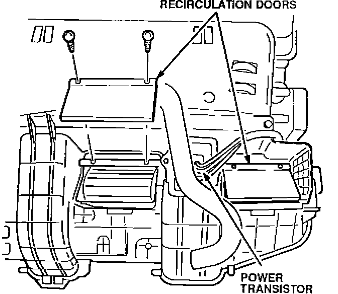
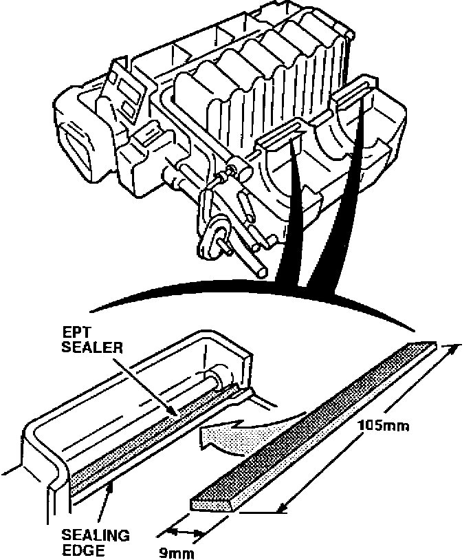
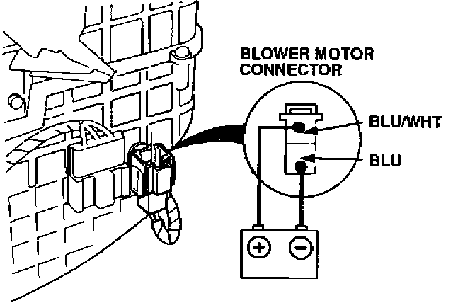

Blower Motor - Only Runs On High or Whistles
9217acura01
YEAR
1992
MODEL
VIGOR
VIN APPLICATION
See VEHICLES AFFECTED
February 24, 1992
BULLETIN NO.
92-006
Blower Motor Unit Only Runs on High or Whistles
SYMPTOM
The blower motor runs only on the high speed setting, and/or a whistling noise comes from the blower vents when the FRESH position is selected.
PROBABLE CAUSE
Blower Motor:
Contamination on the blower motor commutator ring creates a higher than normal current draw. This causes the power transistor to fail.
Heater Unit Air Leak:
A molding deformity in the heater unit cases around the recirculation door area allows air to enter between the case halves. This causes a whistling noise through the vents.
VEHICLES AFFECTED
Blower Motor: Through VIN JH4CC2 ... NCO20314
Heater Unit Air Leak: All 1992 Vigors
If the vehicle falls within the blower motor VIN range repair both problems even if the customer complains of only one.
CORRECTIVE ACTION
Replace the blower motor (see PARTS INFORMATION), and seal the air leaks. Replace the power transistor only if it has failed.
1. Turn the ignition switch ON and push the FRESH air button on the climate control.
2. Open the hood and disconnect the battery cables.
3. Place a drain pan under the heater hose connections at the engine compartment bulkhead. Disconnect the heater hoses and drain the coolant.
4. Discharge the A/C system by using a refrigerant recovery system.
5. While the A/C system is discharging, remove the dashboard following the procedure on page 20-60 of the service manual. Make note of the following items:
It is not necessary to remove the front seals. Slide the seats all the way back to make more room.
Remove the cross brace, located in the lower dash area by the center console.
6. Remove and disassemble the heater unit following the procedures on page 22-50 of the service manual. Make note of the following items:
Additional draining of coolant from the radiator is not necessary, only the coolant drained in step 3.
Mark the 3-P connector to the power transistor to avoid confusing it with the 3-P main harness connector during reassembly. If the connectors are switched, the power transistor will be damaged.
Remove the steering column hanger beam, located between the left "A" pillar and the heater unit.
Unplug the green 22-P connector to the heater control AMP.
Remove the bolts to the ABS control unit mounting bracket and move it to one side.
(A/T models only) Remove the bolts to the A/T control unit mounting bracket and move it to one side.

^ Remove the recirculation doors from the heater unit before removing the lower half of the housing.
7. Inspect the blower motor connector. If it has a white dot, go to step 10. If it does not have a white dot, go on to step 8 even if the blower motor functions properly.
8. Remove and replace the blower motor following the procedure on page 22-53 of the service manual. Be sure to install the washers on the blower motor shaft first, then install the fans.
9. Replace the power transistor, only if the customer complaint was that the blower motor only runs on high.

10. Inspect the areas shown for EPT sealer. If there is no EPT, apply a 105 x 9 mm strip of EPT sealer 5T to each area. Be sure the EPT is even with the inner sealing edge.
11. Reassemble the heater unit.

12. Bench test the heater unit by connecting a 12 volt battery to the blower motor connector. Listen for air leaks or a whistling noise at the outlet vents.
If there is no whistling noise, partially cover the FRESH inlet vents and listen. If there is a whistling noise, determine which vent is making the noise and disassemble the heater unit. Inspect the EPT sealer and repair that area.
13. After bench testing the heater unit for air leaks, reinstall the heater unit and recharge the A/C system.
14. While the A/C system is charging, reinstall the dashboard and the remaining parts removed for the repair.
15. Refill and bleed the cooling system following the procedure on page 10-5 of the service manual.
PARTS INFORMATION
Blower Motor P/N 79310-SL5-A01
Power Transistor P/N 79340-SL5-A01
EPT Sealer 5T P/N 06991-SA5-000
WARRANTY INFORMATION
In warranty: The normal warranty applies.
Out of warranty: Any repair performed after warranty expiration may be eligible for goodwill consideration by the District Service Manager. You must request consideration, and get the DSM's decision, before starting work.
Operation number: 612125
Flat rate time: 3.6 hours
Failed P/N: P/N 79310-SL5-A01
Defect code: 064
Contention code: B02